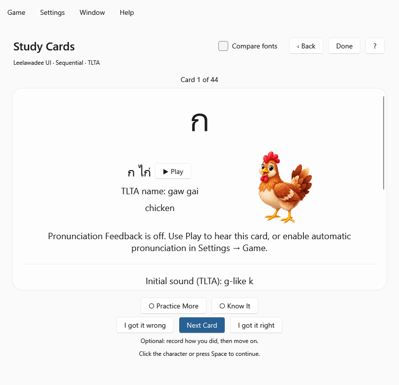
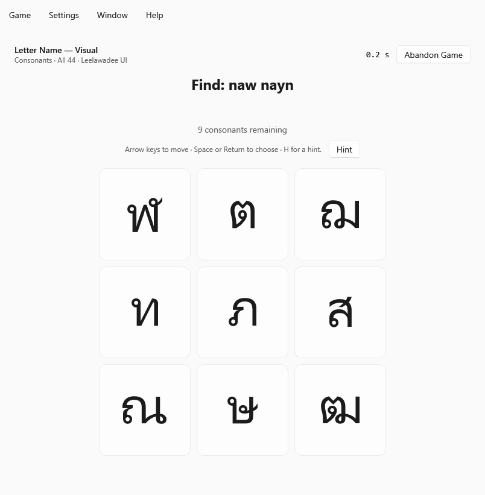
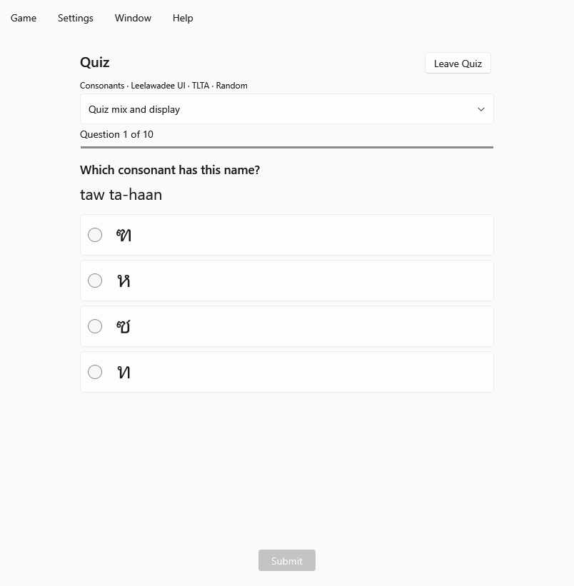
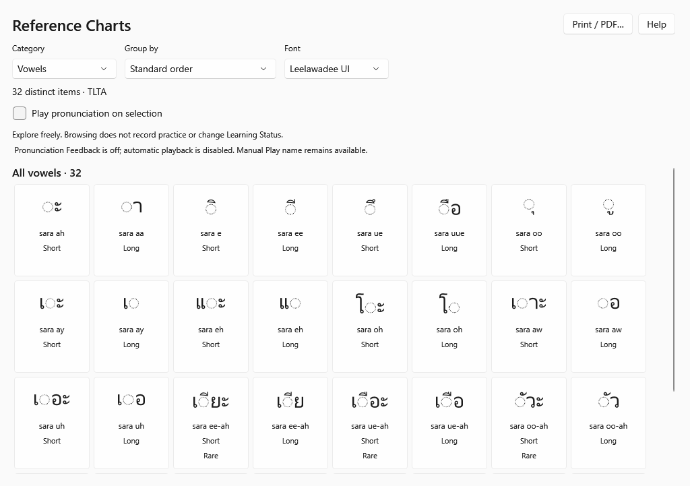
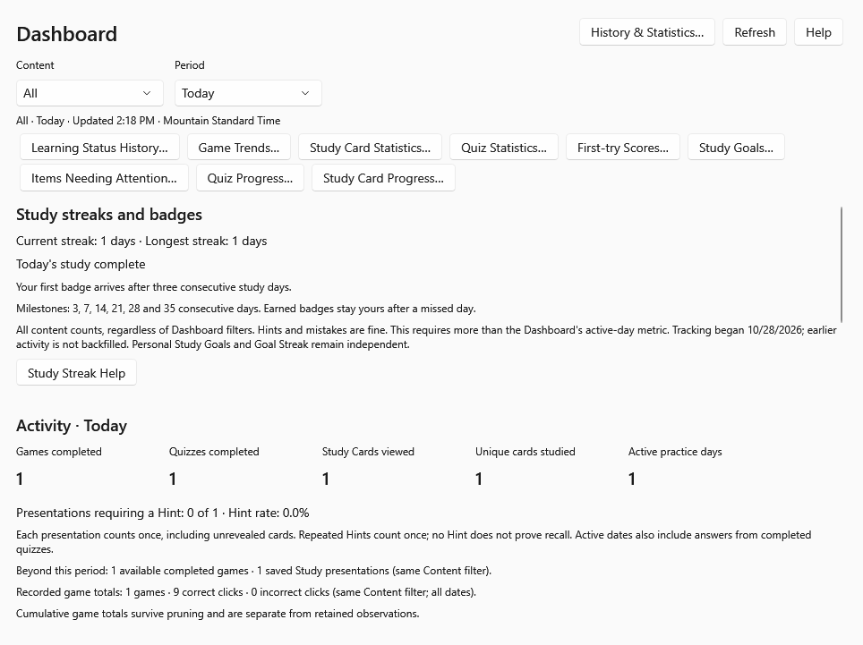
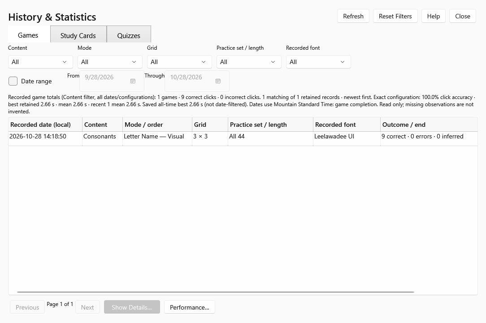

Study Cards
Explore characters at your own pace. Reveal pronunciation details and illustrations, compare Thai fonts, and use Practice More or Know It to guide your review.


Windows · Learn · Listen · Practice
Free Windows preview
Practice Thai consonants, vowels, and numbers in a compact Windows 11 desktop app.
Study, listen, play, and review your progress. Choose TLTA, RTGS, IPA, or Paiboon pronunciation guides, and explore the installed Thai fonts that work best for you.
Version 0.4.0 · Preview 1 · Updated October 29, 2026
For Windows 11 PCs. These are unsigned portable previews, not installers or Microsoft Store releases. Windows may display a downloaded-app warning, and some security policies may block unsigned applications.
Not sure which to choose? Open Windows Settings → System → About → System type. Choose ARM64 for an ARM-based processor, or x64 for an x64-based processor.
Both downloads include a private .NET 10 Windows Desktop runtime. They do not install, replace, or update your system-wide .NET.
The first launch may take longer while the app checks installed Thai fonts. You can create a shortcut to the EXE for easier access.
There is no setup wizard or Apps & Features entry for these portable previews. To update, close the app and extract the next version into a new folder, then update your shortcut. To remove a preview, close it and delete only its extracted application folder and any shortcut you created.
Your settings and learning data are stored separately in %LOCALAPPDATA%\ThaiAlphabetWindows; the font cache uses %LOCALAPPDATA%\ThaiAlphabetWindowsCache. Removing the application folder does not remove these records. Before updating or replacing saved data, use Settings → History → Back Up All Data.
Screenshots show the Windows version with example practice data. Select a screenshot to enlarge it.
Explore characters at your own pace. Reveal pronunciation details and illustrations, compare Thai fonts, and use Practice More or Know It to guide your review.

Practice written-name and listening recognition, consonant classes, sound relationships, and similar shapes on compact desktop grids.

Check your recognition with multiple-choice questions, recorded pronunciations, progress tracking, and feedback after each answer.

Browse consonants, vowel forms, and numbers. Choose groupings and fonts, open details, listen to recordings, and print or save charts as PDFs.

Review your activity, Learning Status, study goals, streaks, and badges. Open focused reports to see patterns and items that need attention.

Browse saved games, Study Card activity, and Quiz results. Use filters and reports to review your own practice over time.

For help, contact support with the app version, Windows version, x64 or ARM64, and what happened. You do not need to send learning-history files for an initial report.
Settings → History offers Back Up All Data and Restore Backup. Restoring a complete Windows backup replaces the destination’s saved data and settings; it does not merge histories. The app creates a recovery backup first.
Cross-platform restores are not supported. Apple backups cannot be restored on Windows, and Windows backups cannot be restored on Apple devices. History exports for analysis are not restorable backups.
No account, advertising, subscriptions, or in-app purchases. Learning history and settings stay local; they are not automatically sent to the developer. Practice, recordings, charts, and Help work offline.